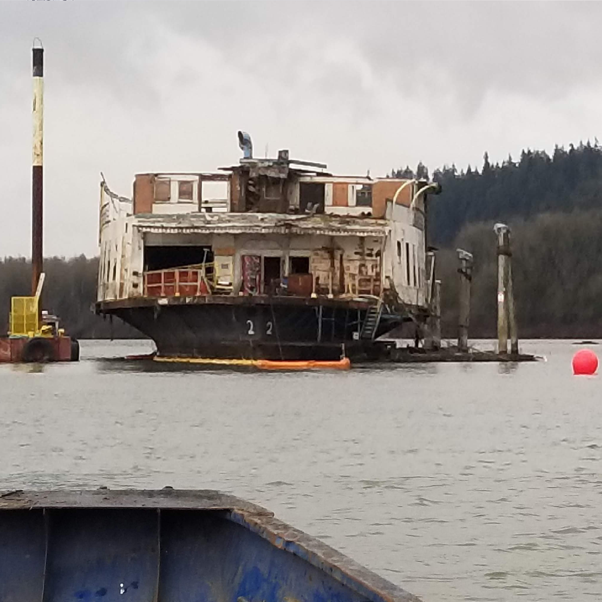
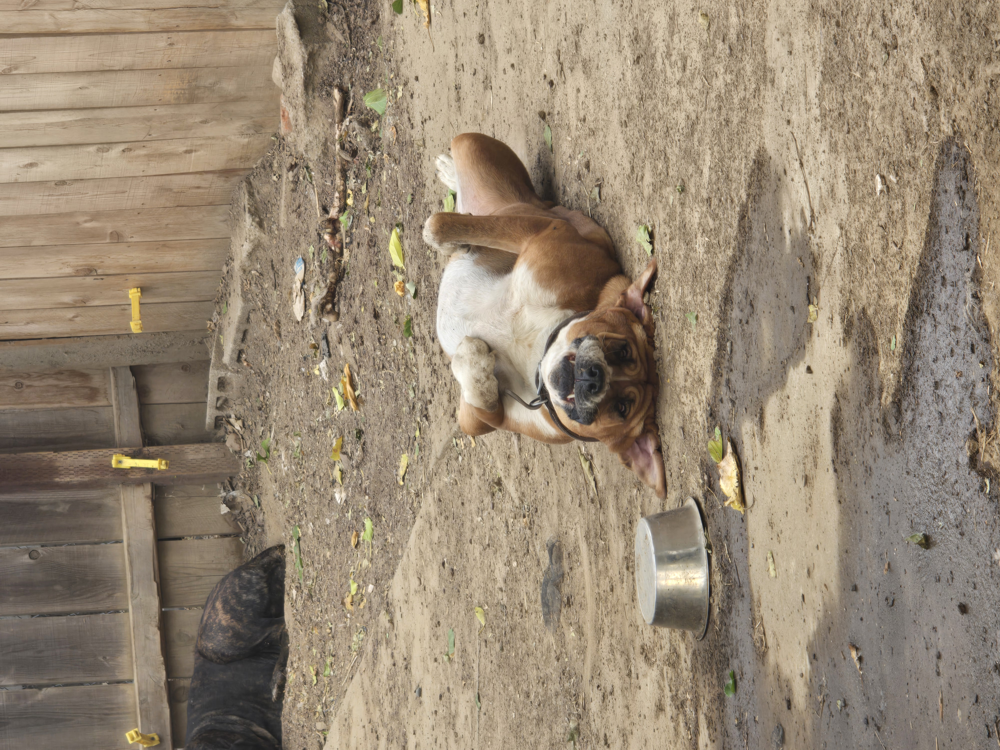
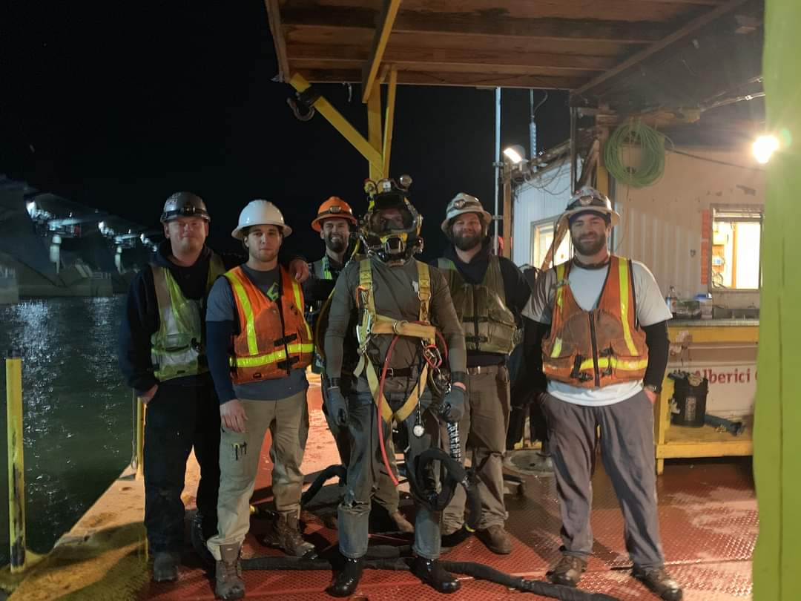
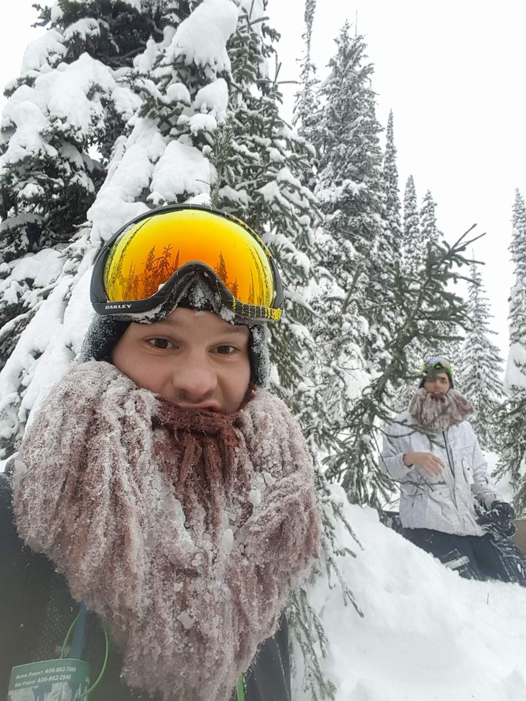

Fred Divine Diving and Salvage
Aug. 2016 - Oct. 2017

Fresh in the diving industry after 7 months in dive school I got my first dive job at a
local mom and pop shop on the Willamette River in Portland Oregon. Most of the time I was
working in the shop but whenever I did get to go on a dive call it would most likely be to
inspect a cargo ship that had made port in Portland OR. Once in a while I would have a few
jobs that was pretty exciting, such as a Core Drilling job (Our clients wanted to get a sample
of the concrete to test the strength and what not.) on a damn on the Yakama River in Oregon.
After a year and a few months I got a pretty exiting job offer working in the union at Global Diving
and Salvage on October 2017.
Global Diving and Salvage
Oct. 2017 - Dec. 2018

After being in the diving industry for a year and a half or so I went to a more salvaging company and for the first year
with the company we salvaged around 10 or 12 derelict vessels in the Columbia River in Washington State.
We ended up spending the majority of the time on deck of a really old river cruise boat that we had
to cut and burn into sections in order to move it into a dry dock to be further dismantled and disposed of which we completed the job in August 2018.

Leaving the salvage job in Washington after a year and a half I was offered to go to Florida for 2 months to Salvage
a fishing vessel(that was less than a month from being completed) that got swept out of dry dock by hurricane Micheal
I believe, the vessel ended up in the Panama City Beach bay on its side. It took a crew of 20 plus people working
10 hours a day 7 days a week for 7 weeks to get the vessel floating again and back in dry dock at the end of December 2018
Advanced American Construction
Jan. 2019 - Mar. 2019

After taking a few weeks off work I ended up with a construction company that was in the middle of constructing new
crane foundation for the port of Everette in Everette WA. It was all chipping concrete which might have been the
worst 3 months of work I have ever done. Mostly due to the fact that there was no diving involved what so ever
and it was all top side concrete chipping. With those 3 months over I then went back to Global Diving around
May of 2019.
Global Diving and Salvage
May 2019 - Oct. 2019

Olmsted IL, is a small town on the Ohio River that has a lock and damn for the cargo ships to be able to go
up and down the river without having to worry about hitting the shallows. A new lock and damn has been in construction
for almost 10 years with the majority of it being completed in the first 2 or 3 years and a lot of demolishing the older lock.
We had 8 crews of 6 people working both day and night shifts with the most of the work being underwater burning of the old
lock and damn the rest of the time has been going to repairs and re-alignments on the individual gates.

Once the work on the Olmsted lock and damn slowed down in Oct. of 2019 I came back home and i decided to take a
little vacation in montana visiting friends from Oct. 2019 to Mar. 2020 and as we all know what happened around march of 2020 I ended up spending a little more
than 3 extra months that I hadn't planed on spending in montana during the covid lock down. Once the lock down was lifted I had trouble
finding work diving right away so I went to my local lumber mill Sierra Pacific Industry as a chain puller AKA " wood sorter ".